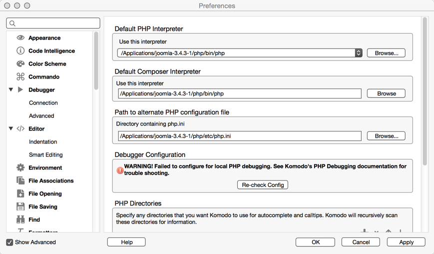
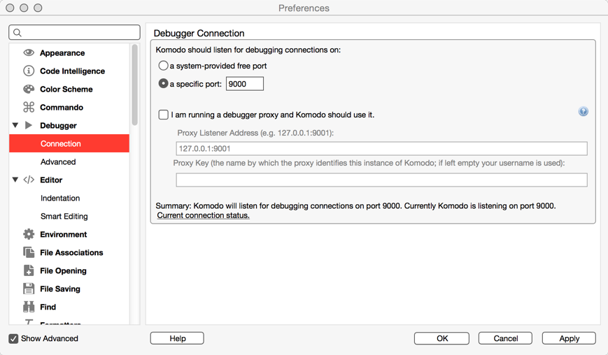
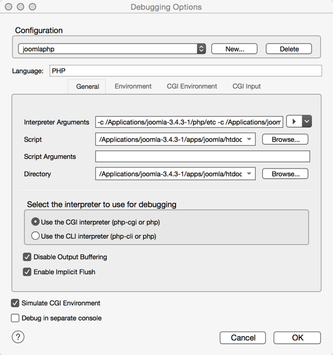

Download and install Komodo IDE
Download and install Komodo IDE
Create a project
Open up Komodo and create a project in your installed MAMP
located on a MAC '/applications/joomla-3.4.3-1/apps/joomla' this will display all files in the left side panel of the IDE.
This will allow you to directly edit and debug your code.
Configure IDE for debugging
Modifying the php.ini file
In order to use the debugger you need to modify the php.ini file of the Apache server you are using.
Follow these instructions:
On a MAC using MAMP
- Goto /applications/joomla-3.4.3-1/php/etc/php.ini
- open up this file with your favourite text editor
- do a search for xdebug you should find something like this:
;[XDebug] ;; Only Zend OR (!) XDebug ;zend_extension="/Applications/mampstack-5.5.27-0/php/lib/php/extensions/xdebug.so" ;xdebug.remote_enable=true ;xdebug.remote_host=127.0.0.1 ;xdebug.remote_port=9000 ;xdebug.remote_handler=dbgp ;xdebug.profiler_enable=1 ;xdebug.profiler_output_dir=/tmp
Delete the semicolon ; in front of the text under ';; Only Zend OR (!) XDebug' so it reads like this:
;[XDebug] ;; Only Zend OR (!) XDebug zend_extension="/Applications/mampstack-5.5.27-0/php/lib/php/extensions/xdebug.so" xdebug.remote_enable=true xdebug.remote_host=127.0.0.1 xdebug.remote_port=9000 xdebug.remote_handler=dbgp xdebug.profiler_enable=1 xdebug.profiler_output_dir=/tmp
Then do a search for implicit_flush you will find
implicit_flush = Off
Change the Off to On
implicit_flush = On
Save your changes
Restart your apache server
In the IDE
Open up preferences select--> languages -->PHPDefault php interpreter
 Under the label ''Default php interpreter'' use the following:- goto ''Use this interpreter'' browse to /applications/joomla-3.4.3-1/php/bin/php
- Under the label ''Default composer interpreter'' browse to /applications/joomla-3.4.3-1/php/bin/php
- Under the label ''Path to alternative PHP configuration file'' browse to /applications/joomla-3.4.3-1/php/etc/php.ini
Listen for debugging
Then select in preferences -->Debugger-->ConnectionDebugger Connection

Under ''Komodo should listen for debugging connections on:''
Change option to 'a specific port:9000'
make sure it is set to 9000 this is what should be set in the php.ini file.
Open up preferences select--> languages -->PHP
Under the debugger Configuration you should see ''Successfully configured for local PHP debugging.'' If not you can click on 'Re-check Config'
Click OK to save changes
Debugging options

Under the debug menu select 'Step In' this will open up a new window titled ''Debugging Options''.
Create a new configuration name it ''joomlaphp'' click ok
- In ''Language'' enter in PHP
- In ''Interpreter Arguments'' click on the arrow to the right of the area select ''look for php.ini file in this directory''. browse to /Applications/joomla-3.4.3-1/php/etc it will then display '-c /Applications/joomla-3.4.3-1/php/etc'
- In ''Script'' browse to /Applications/joomla-3.4.3-1/apps/joomla/htdocs/index.php
- In '''Directory''' browse to /Applications/joomla-3.4.3-1/apps/joomla/htdocs
Start your local web server
Start your joomla local web server by going to /Applications/joomla-3.4.3-1/ and clicking on
your web manager program named manager-osx.app and then select manage servers tab then click on start all.
This will startup the mysql and apache webserver.
Open up web browser and use these links
http://localhost:8080/joomla
http://localhost:8080/joomla/administrator
Note: files are installed at /Applications/joomla-3.4.3-1/apache2/htdocs
Starting the debugger
Under the label ''Select the interpreter to use for debugging select option'' - ''Use the CGI interpreter (php-cgi or php)''.
When ok is click it will start to run and open up the index.php of joomla and stop at the first entry point.
From there you can go/continue, step in, step over, and step out.
If go/continue is selected it will goto the first breakpoint in your code if you have created one.
Under the debug menu select 'Step In' this will open up a new window titled ''Debugging Options''.
Create a new configuration name it ''joomlaphp'' click ok
- In ''Language'' enter in PHP
- In ''Interpreter Arguments'' click on the arrow to the right of the area select ''look for php.ini file in this directory''. browse to /Applications/joomla-3.4.3-1/php/etc it will then display '-c /Applications/joomla-3.4.3-1/php/etc'
- In ''Script'' browse to /Applications/joomla-3.4.3-1/apps/joomla/htdocs/index.php
- In '''Directory''' browse to /Applications/joomla-3.4.3-1/apps/joomla/htdocs
Start your local web server
Start your joomla local web server by going to /Applications/joomla-3.4.3-1/ and clicking on
your web manager program named manager-osx.app and then select manage servers tab then click on start all.
This will startup the mysql and apache webserver.
Open up web browser and use these links
http://localhost:8080/joomla
http://localhost:8080/joomla/administrator
Note: files are installed at /Applications/joomla-3.4.3-1/apache2/htdocs
Starting the debugger
Under the label ''Select the interpreter to use for debugging select option'' - ''Use the CGI interpreter (php-cgi or php)''.
When ok is click it will start to run and open up the index.php of joomla and stop at the first entry point.
From there you can go/continue, step in, step over, and step out.
If go/continue is selected it will goto the first breakpoint in your code if you have created one.